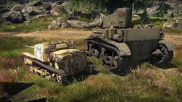

Avantages Très bonne mobilité sur BLINDÉS légers (Centauro, Freccia). Accès à d’excellents canons OTOMATIC/technos AA. Munitions efficaces et cadence correcte. Désavantages Manque de MBT vraiment solides → blindage faible. Arbre technologique plus étroit → moins de choix. Dépend beaucoup du gameplay de flanc.

Performances selon le Battle rating
Bas Battle rating (1.0 – 4.0) :
Véhicules corrects mais souvent fragiles. La mobilité compense le manque de protection, mais demande une bonne connaissance des cartes.
Battle rating intermédiaire (5.0 – 8.0) :
Période délicate : peu de blindage et concurrence rude face aux nations majeures. Le flanking devient indispensable pour rester efficace.
Haut Battle rating / Top tier (9.0+) :
Les Centauro modernes et l’OTOMATIC brillent grâce à leur mobilité extrême, leurs APFSDS rapides et leurs thermiques. En revanche, la moindre erreur de positionnement se paie souvent par un one-shot.